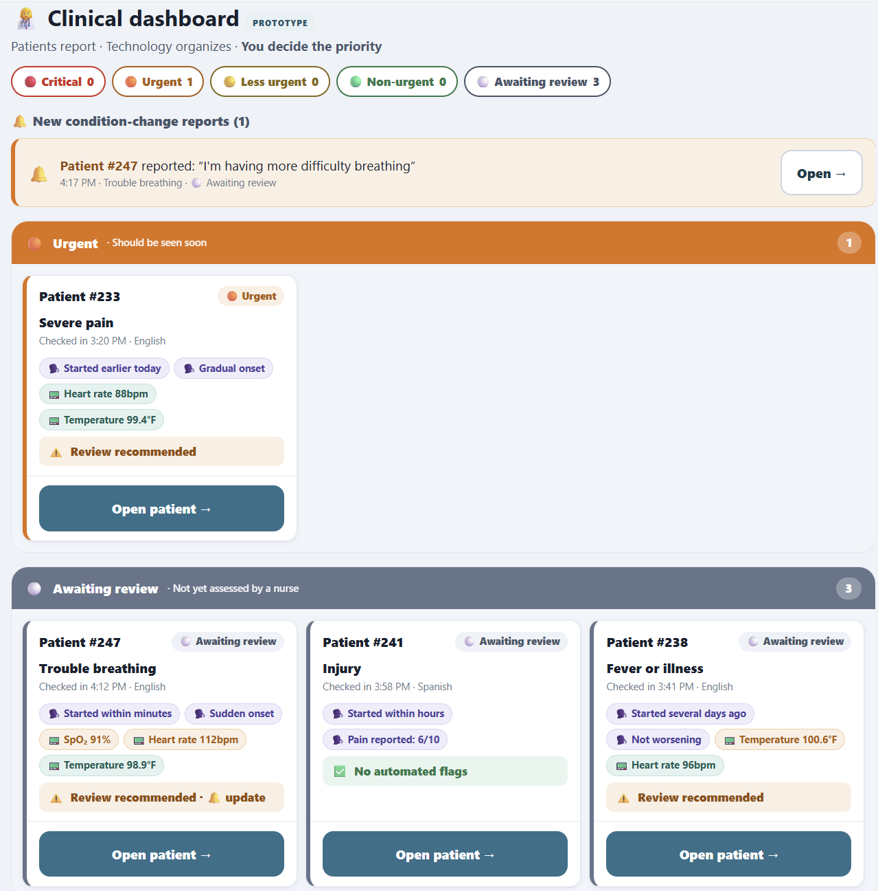

A patient intake and triage-support tool for emergency departments, built around one rule: patients report, the software organizes, and clinical staff decide. It collects structured information before a clinician sees the patient and surfaces details that may need a faster look. It never diagnoses or ranks patients on its own.

Emergency rooms lose time to repeated information gathering, and patients are not good judges of their own urgency. Research I read put it at roughly 65% who overestimate and 8% who underestimate how serious their condition is. The question was how to give staff better information sooner without letting software make calls it isn't qualified to make.
Research how ER triage actually works, then design and build a working, accessible web app that helps staff organize and prioritize incoming patients while keeping every clinical decision with qualified staff.
I read triage protocols and clinical references (ESI high-risk vital signs and NCBI thresholds) and used them to ground the design. With Kiro helping me move faster, I built a single-page app with three views: a patient intake, a clinician dashboard, and a case study. The intake asks one question per screen, a flagging engine explains why something was flagged, and the dashboard keeps patient-reported data visually separate from measured data. Accessibility was built in from the start: 56px touch targets, high contrast, plain language, keyboard navigation, ARIA live regions, and never relying on color alone to signal meaning.
A working prototype with no dependencies that shows a safe triage-support model: flags come with plain-language reasons, patients can't assign their own priority, and the tool never invents a measurement. It demonstrates the full path from research to design decisions to an accessible build.
- 🩺 A non-diagnostic "review recommended" engine that explains its reasons
- ♿ Accessibility first: keyboard, screen reader, and reduced-motion support
- 🤖 Built quickly with Kiro while keeping the design decisions my own
- 🧠 Grounded in real clinical research and cited sources